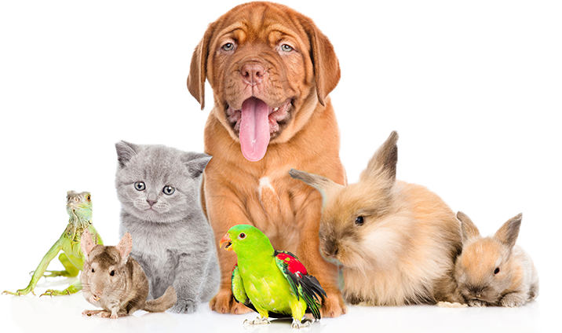

Zwierzęta domowe to niezastąpieni towarzysze w codziennym życiu wielu ludzi. Opieka nad nimi przynosi radość i satysfakcję. Na naszej stronie dowiesz się więcej o popularnych pupilach, takich jak psy i koty.
Poznaj różne rasy, ich charaktery oraz wskazówki dotyczące pielęgnacji i zdrowia zwierząt. Znajdziesz tu również galerie zdjęć i przydatne informacje na temat wychowania pupili.
| Gatunek | Charakterystyka | Przykłady Ras |
|---|---|---|
| Psy | Lojalne i towarzyskie | Labrador, Owczarek Niemiecki |
| Koty | Niezależne i czułe | Maine Coon, Perski |